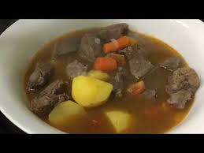

Chorba Recipe

Chorba is the number one soup in Turkmenistan.
This dish is enjoyed as a first dish in the menu and served at homes, grand events and celebrations.
Ingredients
-
100ml oil of choice
-
400gr of beef
-
200gr of carrots
-
2 heads of onion
-
3 heads of medium size potatos
-
2 heads of large tomatoes
-
salt
-
water
Steps
-
Cut meat into chuncks and set aside.
-
Peel the carrots, cut into bite size cubes, wash and set aside
-
Peel the potatos, cut into bite size cubes, wash and set aside
-
Wash, cut the tomatoes into bite size and set aside
-
Peel onions, cut into small pieces and set aside.
-
Get a non-stick pot, heat it up on the stove and add the oil.
-
Toss the meat in and fry on high heat until light dark color.
-
Toss in the onions and fry until solf.
-
Toss in the tomatoes and simmer for 1-2 minutes.
-
Add 500ml of water and bring to boil. Add a table spoon of salt.
-
Lower the heat and add carrots and tomatoes. Bring to boil.
-
Once the water boils reduce the heat. Cook on low heat for 10-15 minutes.
-
Check the carrots and potatos. If it is cooked, turn off the heat and steam for 1-2 minutes.
-
Taste. Should be cooked and seasoned by now.
-
Serve hot.
-
Enjoy!